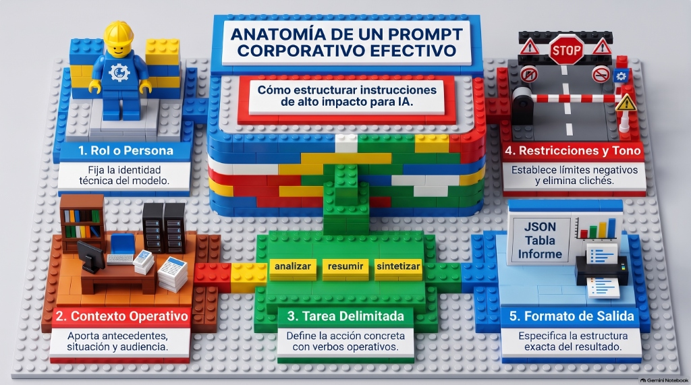

Los 20 Conceptos de la Frontera de IA
"¿Cuántos de estos 20 conceptos dominas y aplicas hoy en tu jornada laboral? Si comprendes y utilizas los 20, te encuentras en el 1% avanzado que ya automatiza operaciones complejas de punta a punta."
01 / Fundamentos
- Tokens
- Ventana de Contexto
- Embeddings
- RAG
- Fine-Tuning
02 / Interacción
- Prompt & System Prompt
- Razonamiento paso a paso
- Chain of Thought
- Function Calling
- MCP Protocol
03 / Autónomos
- Workflows, Loops & Hooks
- Agents & Subagents
- Skills (SKILL.md)
- Vibe Coding
- Guardrails & Scopes
Mejores IAs y Criterio de Selección Operativa
El criterio profesional no consiste en usar un solo modelo para todo, sino en asignar cada tarea al motor óptimo según ventana de contexto, precisión instruccional y ecosistema.
Mentor de Prompts 3.0
Escanea el código QR desde tu teléfono o haz clic en el enlace directo para iniciar el taller de construcción metódica de prompts corporativos en 4 fases.
Técnicas de Prompts
1) Investiga sobre el tema
2) Encuentra 3 datos estadísticos de valor
3) Redacta un artículo con mi tono de voz (Adjunto mi hoja de estilo)"
Cargando SKILL.md...
Documentos Limpios y Presentaciones Ejecutivas sin AI Slop
Los documentos binarios (Word, PDF complejos) inyectan metadatos y etiquetas de formato que fragmentan tokens. En esta sesión pasamos a texto plano estructurado (.md), conversión masiva con Microsoft MarkItDown y narrativa ejecutiva TCS.
Ingeniería de Prompts Aplicada al Entorno Corporativo TCS
Antes de estructurar documentos y presentaciones ejecutivas, calibramos la anatomía de 5 componentes (Rol, Contexto, Tarea, Restricciones y Formato) para eliminar respuestas genéricas desde la primera iteración.


01 / Qué está detrás
- Por qué los Transformers procesan hasta 10× mejor Markdown (
.md) que Word o PDF. - Atención lineal continua sin metadatos binarios que fragmenten tokens.
- Preservación determinista de tablas para análisis numérico exacto.
02 / Aplicación diaria
- Taller práctico con Microsoft MarkItDown (PDF, Excel, PPTX → Markdown).
- Laboratorio de Diapositivas TCS sin AI Slop: titulares de acción concluyentes.
- Aplicación estricta de paleta 65/25/10 y tipografía Calibri Light/Bold.
03 / Entregable del alumno
- Guion completo de 8 diapositivas corporativas en Markdown listo para la plantilla oficial de TCS.
- Evaluación cuantitativa sobre rúbrica de 10 puntos (C1–C4).
| Bloque | Duración | Agenda de la Sesión (120 min) |
|---|---|---|
| 00:00 – 00:10 | 10 min | Calibración y retroalimentación de los prompts de la Clase 1. |
| 00:10 – 00:30 | 20 min | Supremacía del texto plano: Markdown vs. formatos binarios en Transformers. |
| 00:30 – 01:05 | 35 min | Taller práctico con Microsoft markitdown sobre informes reales. |
| 01:05 – 01:50 | 45 min | Laboratorio de Diapositivas Corporativas TCS sin AI Slop. |
| 01:50 – 02:00 | 10 min | Síntesis de la sesión y entrega de plantilla Markdown. |
Informe Técnico: 8 Prompts Corporativos en 5 Bloques
Escanea el código QR para abrir el informe completo en tu celular o navegador (con copiado en 1 clic de cada prompt para Excel, Word, PowerPoint, Copilot Chat y Power BI) y descargar la versión oficial en Word (.docx) bajo estándar TCS.
Rol / Persona
Fija el subespacio técnico y el vocabulario experto (ej. Auditor Senior o Consultor BI), descartando respuestas genéricas.
Contexto
Delimita escenario operativo y ancla archivos en la nube con el comando / antes de formular la tarea (+30% atención).
Tarea
Verbos operativos deterministas (auditar, calcular, sintetizar, estructurar) secuenciados en pasos claros.
Restricciones
Cortafuegos Anti-Slop y regla de oro: prohibido calcular totales en el chat; exigir fórmulas nativas en celda (IFS, XLOOKUP).
Formato
Estructura exacta lista para consumo inmediato: tabla Markdown, hoja nueva de Excel, 5 slides Bento o medidas DAX.
Filtro 01 / El Resultado
- Pregunta: ¿Esto es fidedigno y demostrable contra la fuente primaria?
- Acción: Cotejar manualmente el dato cuantitativo más crítico contra la celda o documento original.
Filtro 02 / El Camino
- Pregunta: ¿Cómo ha calculado o deducido el modelo esta conclusión?
- Acción: Exigir a Copilot la secuencia lógica paso a paso y la fórmula exacta aplicada.
Filtro 03 / La Actitud
- Pregunta: ¿El modelo está siendo complaciente sin rigor?
- Acción: Forzar auto-auditoría: "Actúa como auditor externo implacable y señala 3 fallas potenciales."
| Bloque | Duración | Agenda de la Sesión 3 — M365 Cloud (120 min) |
|---|---|---|
| 00:00 – 00:15 | 15 min | Determinismo en celda vs. probabilidad en chat; penalización +22% tokens en español. |
| 00:15 – 00:55 | 40 min | Excel Web con Copilot: Auditoría de tablas (Ctrl+T), fórmulas IFS y Dashboard dinámico. |
| 00:55 – 01:25 | 30 min | Word Web (comando /) y Outlook: Memorando de 1 página y Elevator Pitch en 4 viñetas. |
| 01:25 – 01:50 | 25 min | PowerPoint Web en 2 clics (regla TCS 65/25/10 y Títulos de Acción) + cruce en Copilot Chat. |
| 01:50 – 02:00 | 10 min | Protocolo de las 3 Preguntas de Auditoría y entrega del flujo Excel → Word → PPT. |
Reevaluación de Cierre: Del Usuario Casual al 1% Avanzado
Marca los conceptos que ya comprendes y puedes aplicar en tu jornada laboral al finalizar las 4 sesiones.
3 Blueprints de Agentes por Área + Tarjeta de 5 Mandamientos
Escanea el código QR para llevarte los 3 blueprints completos listos para copiar en Microsoft Copilot Studio (Operaciones/Riesgos, Guardia ITO y Personas/Cumplimiento) junto con la tarjeta imprimible de los 5 Mandamientos de IA Segura.
Fórmulas en celda
Copilot escribe la fórmula nativa (IFS, XLOOKUP), nunca el total calculado en memoria.
Comando /
Trae tus archivos de OneDrive o SharePoint al informe antes de formular la tarea.
Títulos de acción
Una tesis concluyente por diapositiva; erradica títulos genéricos y el AI Slop.
Agentes seguros
Alcance acotado a carpetas aprobadas, permisos nativos de SharePoint y visto bueno humano.
Verificación crítica
Resultado, camino y actitud antes de confiar o enviar cualquier entregable.
Seguridad Bancaria & SharePoint
- Permisos heredados: Un agente nunca revela un documento a quien no tiene acceso en SharePoint.
- Human-in-the-Loop: La IA sugiere; aprobar, transferir o conceder accesos exige visto bueno humano.
- Auditoría SkillSpector: Contención de Agencia Excesiva (EA1–EA3) y Manejo de Salidas (OH1–OH3).
Rúbrica Oficial (10 Puntos)
- C1 · Comprensión Técnica (2.0 pts): Dominio de tokens, RAG, determinismo y permisos.
- C2 · Aplicación Práctica (3.0 pts): Resuelve una necesidad real de tu área operativa.
- C3 · Documentación (2.0 pts): Markdown limpio, jerarquía y ausencia de relleno.
- C4 · Anti-Slop y Auditoría (3.0 pts): Restricciones estrictas y verificación de resultados.
| Bloque | Duración | Agenda de Cierre — Sesión 4 (120 min) |
|---|---|---|
| 00:00 – 00:15 | 15 min | Del chat individual al agente autónomo de área (memoria, alcance, herramientas y documentos). |
| 00:15 – 00:50 | 35 min | Casos por área: Operaciones/Riesgos, Guardia/Runbooks ITO y Personas/Cumplimiento con fuente citada. |
| 00:50 – 01:25 | 35 min | Configuración con los 5 bloques + base SharePoint + alertas Power Automate en Teams. |
| 01:25 – 01:45 | 20 min | Seguridad bancaria: Human-in-the-Loop, permisos SharePoint y auditoría SkillSpector. |
| 01:45 – 02:00 | 15 min | Reevaluación de los 20 conceptos (1%), 5 Mandamientos de IA Segura y Caja Maestra. |